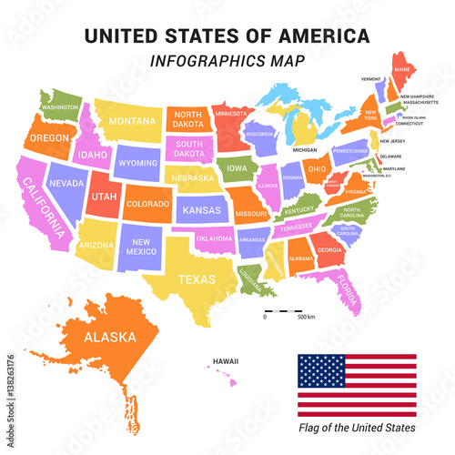
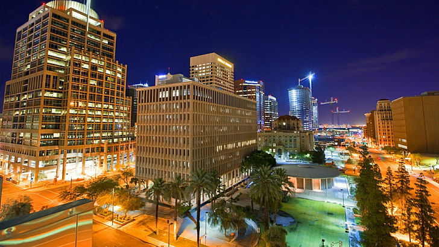
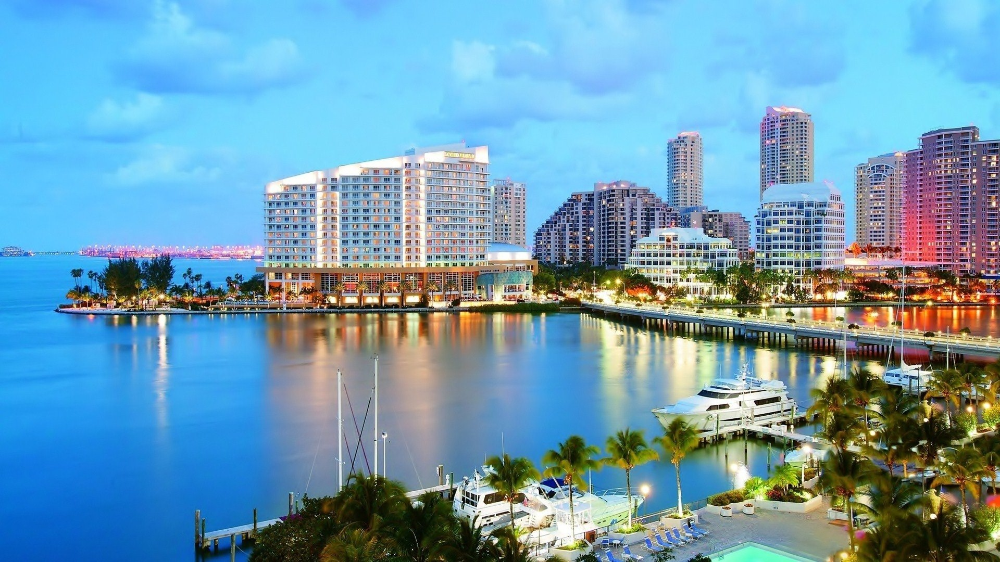
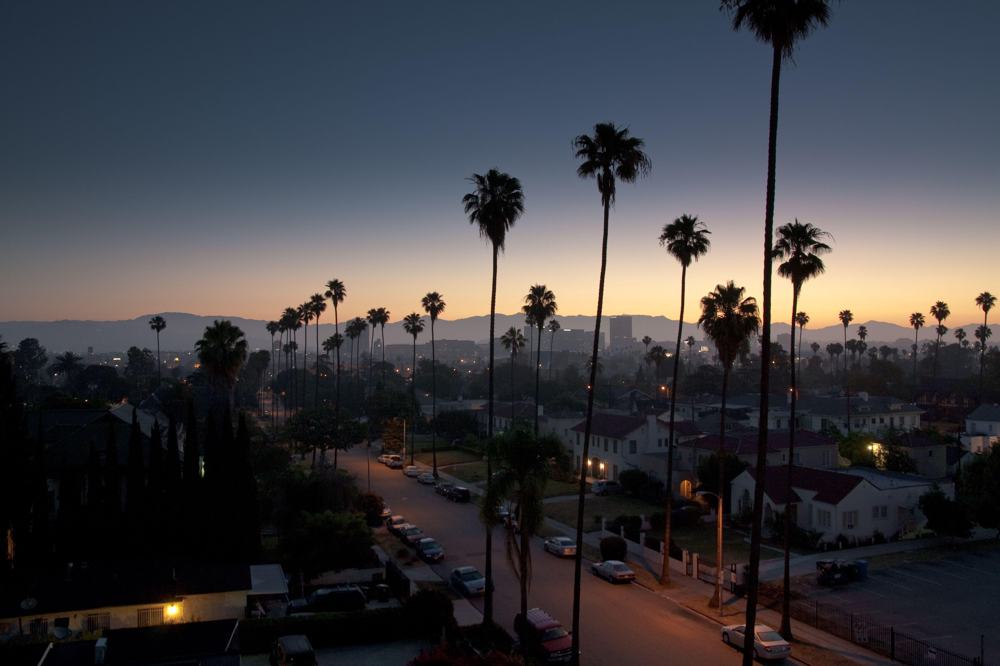

There are a many reasons why I would want to travel to different places around the United States or even outside of it. One of the main reasons is because I want to see and experience new things that I haven't before. It's always been an interest of mine to visit different places and maybe even consider living there in the future to experience the culture and try out new things that I am not used to especially since I have only ever lived here in Fresno, California my whole life and have yet to travel.

This is an Infographic map of The United States of America
Phoenix, Arizona
As my first place that I researched and found as a place I would want to visit or live at someday, it would be Phoenix, Arizona. Here are some facts about Phoenix, Arizona that I learned. Phoenix is the capital and largest city in Arizona. It is one of the largest cities in the United States too. Phoenix is partly known for the weather and most of the time always being warm. The sunny weather over there is part of many reasons why people love to live in Arizona. They don't really have that many cold weather days like other places around the world. I also learned that Arizona is one of the states that doesn't have daylight savings time. They have the Grand Canyon National Park located here too and people could go and visit. It also has many Deserts here and that's also including food Deserts. They have one of the most known deserts here which is called the Sonoran Desert. I seen and read how there's many things you can do in Arizona. They have things like tours where you can go to places like the Canyon tours, Jeep and Off road tours, Sedona tours, Hot air balloon flights, Helicopter rides and many other things that Have to do with touring and exploring. There's many things you can do here which is a reason why it would be a great place to visit and even live at. They also have museums you can visit in downtown Phoenix. There's places that you can hike at for the people who love to hike. They also have many sporting events that you can go to and there's many malls there that you can go shopping at.

This an image of Phoenix, Arizona
Miami, Florida
The second place that I researched about and would want to visit and maybe even live at in the future would be Miami, Florida. Miami, Florida is another place that I would want to visit someday and may even consider living at. Some things that I learned and seen about Miami is the beaches there. They have 16 beaches in Miami that you could visit and chill at. Most people go on vacation to Miami for this reason. The city is also known for it's center of trade, arts, finance, commerce, culture, and having the largest urban economy. They have a place called the Bayside Marketplace which is an outdoor mall and it's popular to most tourists and locals. People come here to mostly shop but there's also other things like several restaurants, cafes, and live entertainment for people to see with the views of the waterfront because of how close it is. Another famous place in Miami, Florida is Little Havana. Little Havana is a cuban district that people go to because it's full of unique restaurants and local shops that can't be found anywhere else in the city. So it becomes a very popular place for people to go to and explore. The zoo in Miami is another place that people go to. They have all the animals in an enclosure that looks similar to their own natural habitat instead of putting them in cages where they could be stuck. They allow them to have the chance to interact with other animals too and even have over 3,000 animals with 30 endangered species at the Miami Zoo. Miami has museums for people to visit and even has a place called Deering Estate that's on the National Register of Historic Places. From the Miami Cuisines, Cuban Coffee, The nightlife, the Ultra Music Festival, and it's iconic buildings, it's clear why many people would want to visit Miami, Florida.

This an image of Miami, Florida
Los Angeles, California
The next place that would be considered a city to visit and in the future live at would be Los Angeles, California. Los Angeles, California would be another option of someday visiting for many reasons. First off, the beaches is a reason why LA would be a place to visit. They have one of the most visited beaches which is the Santa Monica Beach. Not only do they have the beach there but they have many great restaurants to go to and the nightlife spots there are places you wouldn't want to miss. The soft sand and perfect weather with many things you can do gives people reasons to go there and tourists to visit too. They even have a pier which has a ferris wheel for people to ride on and see the views of the beach. Something that I also see is the tours they have in Los Angeles. They have a Warner Bros. Studio tour in hollywood that you can take and you can take a tour through Hollywood and Beverly Hills and see some of the area's landmarks and celebrity homes if you wanted to. Most of all for people who like sightseeing, they have many places you can go to see all of the cities top attractions from Venice Beach to the Sunset Strip to Griffith Park, and many more. You also can't forget about the many Art Museums they have there. There are so many places that you can go to around Los Angeles, California that it would be the perfect place to visit as a tourist or to live at.

This an image of Los Angeles, California
Honolulu, Hawaii
Honolulu, Hawaii would be a nice place to consider visiting and in the near future possibly living at. Hawaii is of course a place that is very heavily visited and is the perfect place to go to for a vacation. The weather in Hawaii is always moderate which makes it perfect to be out in clothing that won't keep you feeling restricted. All the beaches in Hawaii are public by law which means you can go anywhere where the beach is at and spend some alone time away from others or even bring some friends or family along to have your own area to chill at. The sunset and sunrise are something that you will definitely want to see and witness for yourself. Hawaii is known for having the best views of the sunset and the sunrise. It's something you wouldn't want to miss. There is also so many activites that you can do here and with family. The people there is another thing to add on to the list of reasons to visit. The culture is felt here and with everyone having what they call the Aloha spirit and being very chill, it would make for a very peaceful vacation or a peaceful place to live at. Most of all, the feeling of being in nature is felt here. The natural beauty is something you will see and feel when you are in Hawaii that it's perfect for people who love all things that have to do with nature. The food in Hawaii is what many people who visit or live there crave for too. From research I did, the food there is something that you wouldn't want to skip out on. It's said that the food there is a must try.
This an image of Honolulu, Hawaii
Houston, Texas
Houston, Texas is another area that would be considered a place to visit and maybe live at in the near future. Houston, Texas was named one of the top american cities and is one of the fastest growing for many reasons and there's so many as to why people would want to visit or live here. One reason why Houston, Texas would be a great place to live or visit is the diverse and thriving culture that it has there. It's something you would want to witness and see for yourself when you are there. They have many parks that you can visit and museums or art exhibits that you can visit too. The food there is some of the greatest in America and people who live in Houston, Texas highly recommend many places to eat at. They also have a museum of a space station in Houston that you can go to. Galveston is another popular place that people go to because it's a historic beach town and there's a lot of things you can do there. Most of all though, the affordable cost of living in texas is another reason why it attracts so many people to move here. The weather is great year-round and Houston also has world class shopping places and dining too for people to go.